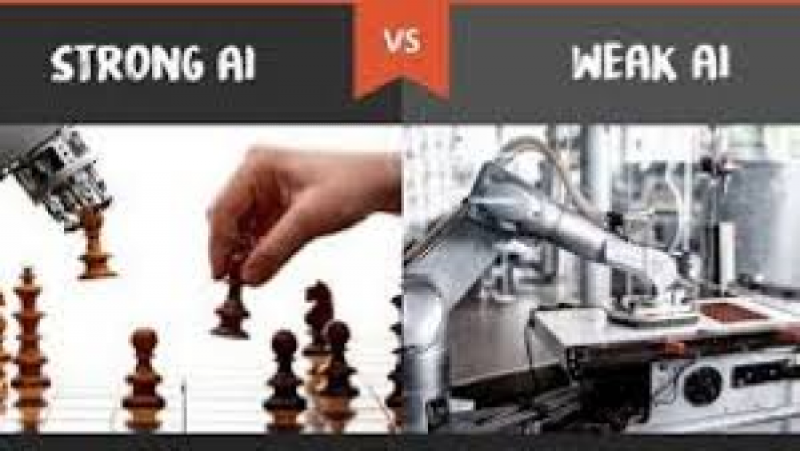

Artificial intelligence (AI) refers to the simulation of human intelligence in machines
that are programmed to think like humans and mimic their actions.
They enables computers and machines to mimic the perception, learning, problem-solving,
and decision-making capabilities of the human mind."AI is a computer system able to
perform tasks that ordinarily require human intelligence... Many of these artificial intelligence
systems are powered by machine learning, some of them are powered by deep learning and some of
them are powered by very boring things like rules."
LINK to know more about AI
Jump to Machine learning
Categorization of Artificial Intelligence
Artificial intelligence can be divided into two different categories:
weak and strong.

WEAK AND STRONG Artificial Intelligence
Weak artificial intelligence
Also called narrow AI—is a type of artificial intelligence that is limited to a specific or narrow area.
Weak AI simulates human cognition. It has the potential to benefit society by automating time-consuming tasks and by analyzing
data in ways that humans sometimes can’t.A weak AI program doesn’t engage in conversation, recognize emotion,
or learn for the sake of learning; it merely does whatever job it was designed to do.
Strong Artifical Intelligence (AI)systems
Are systems that carry on the tasks considered to be human-like. These tend to be more complex and complicated systems.
They are programmed to handle situations in which they may be required to problem solve without having a person intervene.
These kinds of systems can be found in applications like self-driving cars or in hospital operating rooms.
These artificial beings have emotions, a sense of purpose, and even a sense of humor.
They may learn a new language just for the joy of learning it
More on weak AI
More on strong AI

MACHINE LEARNING
Machine learning is the concept that a computer program can learn and adapt to new data without human intervention.
Machine learning is a field of artificial intelligence (AI) that keeps a computer’s built-in algorithms current
regardless of changes in the worldwide economy.
More about machine learning
FIELDS OF STUDY
ARTIFICIAL INTELLIGENCE
MACHINE LEARNING
DEEP LEARNING

For more details:
contact: 91 908546xxxx.
send email